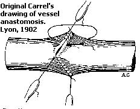
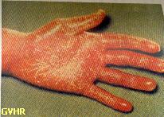

TRANSPLANT REJECTION
Transplant rejection is discussed here because
it appears to involve several of the hypersensitivity reactions
discussed earlier, being an example of integrated immune system
response. So, it gives the possibility of its inventory
reappraisal.

Since
A. Carrel in 1912 achieved the first Nobel Prize in the field of
transplantation for the invention of surgical suture, which
allows joining blood vessels of graft and host, the
transplantology has climbed many peaks. The transplantation of
skin, cornea, bone grafts, blood transfusions – became routine
procedures. Kidney transplantation is now the treatment method
from broad clinical practice. With growing success leading
medical centers worldwide perform the transplantations of liver,
lungs, heart and complex of these organs; bone marrow
transplantation, grafting of bowel portions and pancreatic
islets. As a result, in 1990 the efforts of transplantologists
were rewarded by Nobel Committee again (J. Murrey, E. Donnel
–Thomas). The main obstacle on the way of transplantology still
is host’s immunological rejection of allografts (taken from
another individual of the same spice) and xenografts (taken from
the representative of another biological spice). The promising
bypass is to transplant isografts (taken from monozygous twins
and cloned individuals) and autografts (taken from an individual
him/herself). For all other cases the doctors have to use
antigenic matching and selection of donors plus immunosuppressive
treatment. The first patient with heart graft – South African
Luis Vashkansky – has perished after technically successful
operation due to jatrogenic immune deficiency. In spite of all
inspiration, caused by new generation of more selective
immunodepressors – fungal macrolide antibiotics (cyclosporins,
FK506, rapamycin), the problem of immunological conflict between
host and graft still is not resolved.
The antigenic set of an individual is unique,
first of all, due to specific MHC haplotype. Although this
question was already reviewed in “Basic Immunology” section,
it is possible to remind here few details. The MHC antigens of
the 1st class (belong to A, B and C loci) are
expressed on all nucleated cells (those of G locus present
exclusively on trophoblast). These antigens are recognized by
CD8+ T-lymphocytes. In addition, APCs, lymphoid, macrophageal and
endothelial cells express MHC class II antigens (belong to DR, DP
and DQ loci). CD4+ T cells recognize them. Non-nucleated blood
postcellular elements (platelets and RBC) display the antigens of
AB0, Rh, MNS systems, which also make some contribution into
immunological disharmony of host and graft. Moreover, AB0
antigens are expressed in inner organs also (e.g. in kidneys).
Even if all MHC, AB0 and other aforementioned antigens are
identical, there may arise some problems with graft survival,
which witness for possible existence of another human
transplantation antigens, still not known.
The set of MHC antigens is inherited in
co-dominant mode. Every nucleated cell of an individual has 8 MHC
antigens (4 taken from each parent). All MHC loci display
multiple allelism. In human populations there are more than 20
alternative alleles for A locus, 40 – for B, 10 – for C and
over 40 – for D locus. The genes are inherited as a whole group
in 6th chromosome (haplotype principle). It means that
the probability of identity in non-relatives is very small, but
in kindred persons it may be significant. A transplant survives
only if all its MHC antigens present in recipient, otherwise
rejection reaction arises, proportional to the degree of
antigenic difference.
An exclusion of this rule is graft-versus-host
reaction (GVHR).

In
GVHR there is immunologically active graft, containing T cells,
which are not rejected because of antigenic similarity to host or
due to host’s immune deficiency. They perform the aggression
against host tissues. The typical example of GVHR is damage and
necrosis of epithelial cells in bowels, liver, skin and kidneys
in patients after bone marrow transplantation. Many features of
GVHR are observed in patients with the nephropathy of 2nd
half of pregnancy. GVHR manifestation resembles multisystem
autoimmune involvement with necrotic foci in many organs and
resulting interstitial fibrosis. Chronic GVHR causes progressive
loss of parenchymal structures in different organs and tissues
with fibroplastic replacement. GVHR manifestation has many
commons with progressive systemic sclerosis.
NEXT CHAPTER OR